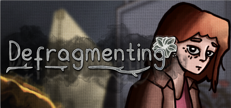

Image: Key Visual

Image: Defragmenting Logo
Project Type:
Indie Game (Demo)
Project Details:
Personal Role:
Team Name:
pngTriads
Team Members:
Notes:
Fragile's spiritual successor.
The outside is being ravaged by a mysterious downpour of a glass, you are forced to take shelter in a seemingly innocuous rundown hotel. Yet, stuck with you are people who you wish you would never see again. What will you do to survive?
Defragmenting mixes elements of visual novels and point-and-click adventure games to tell a story of desperation, shared tragedy and a deep rooted desire to overcome barriers of ourselves in the face of an impending doom.
Our team, pngTriads, consists of:
Image: Key Visual
My main role for this project is 2D artist, my first official role as one since leaving the mobile game industry to work on our imagined indie game.
The art style was a stepped up from our team's previous project, Fragile, which was much more monotone and minimalist. For this project, i put in an effort to improve my own art style, trying replicate a comic book/graphic novel style, while trying to synthesize my own style. It results in a more detailed and stylized comic book style. My direct inspirations were: Scarlet Hollow and Disco Elysium.